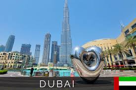
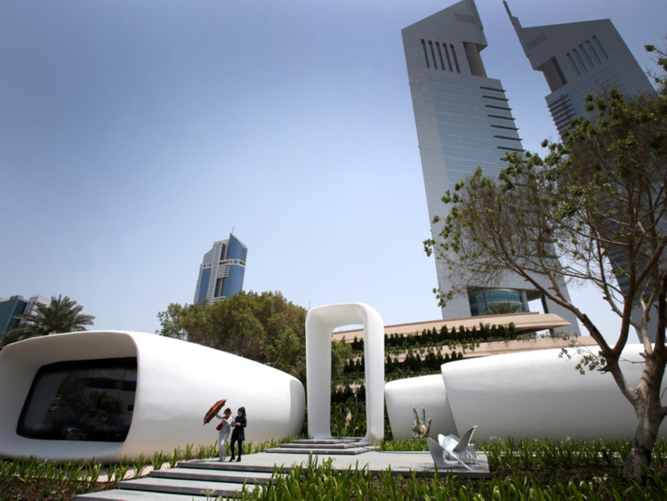

Welcome To Dubai

Welcome to Dubai: Where Modern Marvels Meet Timeless Traditions
Go forward
Skyscraper Wonderland
- Engaging text highlighting the Burj Khalifa's record-breaking height and the mesmerizing fountain show
at its base.
- High-quality images showcasing the Burj Khalifa's architectural grandeur and the captivating fountain
show.
- The Burj Khalifa, Dubai's most iconic landmark, stands at a height of 828 meters (2,717 feet), with 163
floors.
- Visitors can take a high-speed elevator to the observation deck on the 148th floor, known as At the Top
Sky, for panoramic views of the city.
- The Burj Khalifa features a stunning choreographed fountain show at its base, where water dances to
music in a mesmerizing display.
Architectural Marvels
-
Captivating text describing the Burj Al Arab's unique sail-shaped design and its luxurious offerings.
-
Eye-catching images of the Burj Al Arab's opulent interiors and breathtaking views from its rooftop.
-
The Burj Al Arab, shaped like a sail, is known for its opulence and luxury. It stands on an artificial
island and offers lavish suites, world-class restaurants, and a helipad.
-
Dubai Marina, a waterfront district, showcases stunning high-rise buildings, including the twisted Cayan
Tower and the Princess Tower, one of the tallest residential buildings in the world.
Palm-shaped Islands
-
Informative text explaining the concept of Palm Jumeirah and Palm Jebel Ali, highlighting their luxury
accommodations and attractions.
-
Stunning aerial images showcasing the palm-shaped islands and their exclusive resorts.
-
Palm Jumeirah is the world's largest man-made island and consists of a trunk, 16 fronds, and a crescent.
It offers luxurious residential villas, hotels, and resorts, including the famous Atlantis, The Palm.
-
Palm Jebel Ali, currently under development, will be even larger than Palm Jumeirah and will feature a
wide range of residential, commercial, and entertainment options.
Desert Adventure
-
Exciting text capturing the thrill of desert safaris, dune bashing, camel riding, and sandboarding
-
Action-packed images depicting adventurous activities in the desert, showcasing the adrenaline rush.
-
Desert safaris are popular in Dubai, offering thrilling experiences like dune bashing, where visitors
ride in 4x4 vehicles over sand dunes.
-
Camel riding allows you to experience the traditional mode of transport in the desert, while
sandboarding offers an exciting ride down the dunes on a board.
Multicultural Melting Pot
-
Engrossing text celebrating Dubai's diverse cultural landscape, emphasizing its vibrant dining scene and
cultural festivals.
-
Colorful images showcasing various cuisines and cultural events, highlighting the city's multicultural
charm.
-
Dubai's multicultural environment is reflected in its diverse dining scene, with restaurants serving
cuisine from around the world, including Arabic, Indian, Persian, and international flavors.
-
The city hosts various cultural events and festivals, such as the Dubai Shopping Festival and Dubai Food
Festival, showcasing the richness of different cultures.
.jpg)
Technological Innovations
-
Informative text describing Dubai's commitment to technological advancements, including AI, blockchain,
and autonomous transportation.
-
Modern and futuristic images depicting smart city initiatives and advanced technologies in action.
-
Dubai has implemented advanced technologies like smart surveillance systems, AI-powered services, and
blockchain applications to enhance efficiency and convenience for residents and visitors.
-
The Dubai Autonomous Transportation Strategy aims to introduce autonomous vehicles and flying taxis,
further revolutionizing transportation in the city.

Record-Breaking Attractions
-
Exciting text highlighting the awe-inspiring Dubai Fountain, XLine Dubai Marina, and IMG Worlds of
Adventure.
-
Captivating images capturing the grandeur and excitement of these record-breaking attractions.
-
The Dubai Fountain, located at the base of the Burj Khalifa, spans over 900 feet and features a
captivating water, music, and light show every evening.
-
XLine Dubai Marina offers an adrenaline-pumping experience with the world's longest urban zipline,
allowing visitors to soar through the skyline at high speeds.
-
IMG Worlds of Adventure, the largest indoor theme park, offers thrilling rides and attractions based on
popular characters from Marvel, Cartoon Network, and more.
Khaleej TIMES
.jpg)
Cultural Heritage
-
Engaging text inviting visitors to explore Dubai's cultural heritage through the Dubai Museum and the
Bastakiya Quarter.
-
Evocative images showcasing traditional architecture, cultural exhibits, and the vibrant atmosphere of
the Bastakiya Quarter.
-
The Dubai Museum, housed in the Al Fahidi Fort, showcases the city's history and culture, including
exhibits on traditional Emirati life, pearl diving, and Bedouin heritage.
-
The Bastakiya Quarter, with its traditional wind towers and restored buildings, offers a glimpse into
Dubai's past and is home to art galleries, cafes, and boutique hotels.
.jpg)

.jpg)
Hospitality and Luxury
-
Welcoming text showcasing Dubai's renowned hospitality and luxurious accommodations.
-
Elegant images portraying the city's lavish hotels, gourmet dining experiences, and impeccable service.
-
Dubai is known for its luxurious hotels and resorts, such as the Burj Al Arab, Atlantis, The Palm, and
the Jumeirah Beach Hotel, offering world-class amenities, stunning views, and exceptional service.
-
The city boasts a diverse culinary scene, with renowned restaurants helmed by celebrity chefs, serving a
wide range of international cuisines.
.jpg)
.jpg)
Go bacward
Go Back